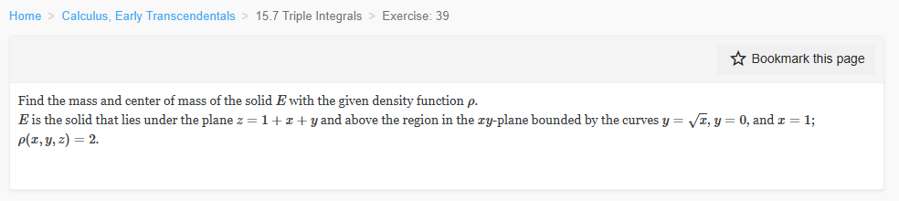
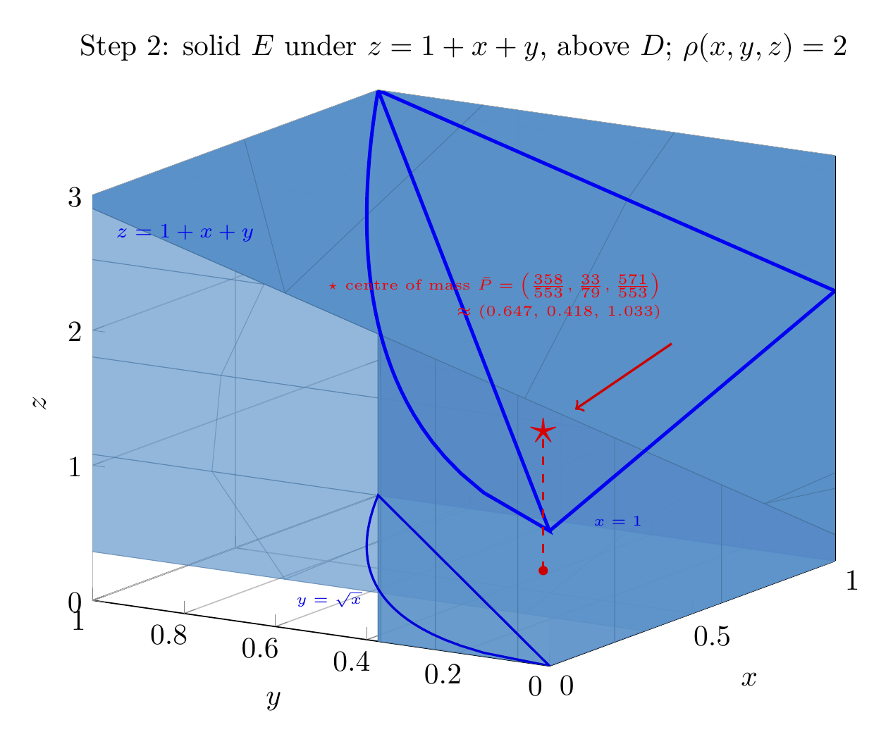

Please solve the problem in the following image.
(Image `20260928_002518_451991_utc_0800_0.png`. Alt text: Image: human_20260928_002518_451991_utc_0800)

20260928_002518_451991_utc_0800_0.png
End of problem
Answer
## Mass and center of mass of a solid with constant density
**Problem.** $E$ lies under the plane $z=1+x+y$ and above the region of the $xy$-plane bounded by $y=\sqrt{x}$, $y=0$, $x=1$; $\rho(x,y,z)=2$. Find $m$ and $(\bar x,\bar y,\bar z)$.
### Step 1 -- Describe the solid (the hardest conceptual step)
The base $D$ is the region between $y=\sqrt x$ and $y=0$ for $0\le x\le 1$, and the solid is capped above by the plane. So
$$
E=\{(x,y,z):\; 0\le x\le 1,\;\; 0\le y\le \sqrt x,\;\; 0\le z\le 1+x+y\}.
$$
Two facts that make the integration painless:
* Area of $D$: $\displaystyle\int_0^1\!\int_0^{\sqrt x}dy\,dx=\int_0^1\sqrt x\,dx=\tfrac23$.
* Because the upper bound is a function of $x,y$ **only**, every $z$-integration is just a length $1+x+y$ (or $\tfrac12(1+x+y)^2$ for $\int 2z\,dz$). The solid is a "generalized cylinder" over $D$.
The region is Type I in $x$ ($y$ runs from $0$ to $\sqrt x$); equivalently $y^2\le x\le 1$, $0\le y\le 1$. We keep the first form because $\sqrt x$ integrates cleanly.
---
pgfplots_0.png
---
### Step 2 -- The formulas to be used
$$
m=\iiint_E\rho\,dV,\qquad
\bar x=\frac{1}{m}\iiint_E x\rho\,dV,\quad
\bar y=\frac{1}{m}\iiint_E y\rho\,dV,\quad
\bar z=\frac{1}{m}\iiint_E z\rho\,dV .
$$
Since $\rho=2$ is constant, $m=2\,\text{Vol}(E)$ and each moment is $2$ times the corresponding first moment of volume. The constants cancel in the ratios, so **the center of mass of a constant-density solid is its centroid** -- the value of $\rho$ never affects $(\bar x,\bar y,\bar z)$.
The repeated integral (order $dz\,dy\,dx$) is, for any integrand $f(x,y)$ independent of $z$:
$$
\iiint_E f\,dV=\int_0^1\!\int_0^{\sqrt x} f(x,y)\,(1+x+y)\,dy\,dx,
\qquad
\iiint_E 2z\,dV=\int_0^1\!\int_0^{\sqrt x}(1+x+y)^2\,dy\,dx .
$$
The elementary $D$-integrals used repeatedly are
$$
\iint_D 1=\tfrac23,\quad \iint_D x=\tfrac25,\quad \iint_D y=\tfrac14,\quad
\iint_D x^2=\tfrac27,\quad \iint_D xy=\tfrac16,\quad \iint_D y^2=\tfrac{2}{15}.
$$
### Step 3 -- Mass
$$
m=\int_0^1\!\int_0^{\sqrt x}2(1+x+y)\,dy\,dx
=\int_0^1 2\Big[y+xy+\tfrac{y^2}{2}\Big]_{0}^{\sqrt x}dx
=\int_0^1\big(2x^{1/2}+2x^{3/2}+x\big)dx
$$
$$
m=2\cdot\tfrac23+2\cdot\tfrac25+\tfrac12=\tfrac43+\tfrac45+\tfrac12=\boxed{\dfrac{79}{30}}\approx 2.6333 .
$$
### Step 4 -- The three moments
**About the $yz$-plane** (numerator of $\bar x$):
$$
M_{yz}=\int_0^1\!\int_0^{\sqrt x}2x(1+x+y)\,dy\,dx
=\int_0^1\big(2x^{3/2}+2x^{5/2}+x^2\big)dx
=\tfrac45+\tfrac47+\tfrac13=\tfrac{179}{105}.
$$
**About the $xz$-plane** (numerator of $\bar y$):
$$
M_{xz}=\int_0^1\!\int_0^{\sqrt x}2y(1+x+y)\,dy\,dx
=\int_0^1\Big(x+x^2+\tfrac23 x^{3/2}\Big)dx
=\tfrac12+\tfrac13+\tfrac{4}{15}=\tfrac{11}{10}.
$$
**About the $xy$-plane** (numerator of $\bar z$) -- here the $z$-integral produces a square:
$$
M_{xy}=\int_0^1\!\int_0^{\sqrt x}(1+x+y)^2\,dy\,dx
=\int_0^1\Big[(1+x)^2\sqrt x+(1+x)x+\tfrac13 x^{3/2}\Big]dx
$$
$$
=\Big(\tfrac{2}{3}+\tfrac{4}{5}+\tfrac{2}{7}\Big)+\Big(\tfrac12+\tfrac13\Big)+\tfrac{2}{15}
=\tfrac{184}{105}+\tfrac56+\tfrac{2}{15}=\tfrac{571}{210}.
$$
### Step 5 -- Divide by the mass
$$
\bar x=\frac{179/105}{79/30}=\frac{179\cdot 30}{105\cdot 79}=\frac{358}{553},\qquad
\bar y=\frac{11/10}{79/30}=\frac{33}{79}=\frac{231}{553},\qquad
\bar z=\frac{571/210}{79/30}=\frac{571}{553},
$$
where $553=7\cdot 79$. Numerically $(\bar x,\bar y,\bar z)\approx(0.6474,\,0.4177,\,1.0325)$.
### Step 6 -- Sanity checks (always do these)
* $\bar x,\bar y$ must land inside $D$: $0.647\in[0,1]$ and $0.418<\sqrt{0.647}=0.804$. ✔
* The centroid of $D$ alone is $(\tfrac35,\tfrac38)=(0.600,0.375)$; since the height $1+x+y$ grows with $x$ and $y$, mass is pushed toward larger $x,y$: $0.647>0.600$ and $0.418>0.375$. ✔
* Over $(\bar x,\bar y)$ the fibre has midpoint $\tfrac12(1+\bar x+\bar y)\approx 0.933$, yet $\bar z\approx1.033$ is **higher**: taller fibres (large $x,y$) carry more mass and their own midpoints are higher. ✔
* Independent Monte-Carlo estimate of $(m,\bar x,\bar y,\bar z)$: $(2.6342,\,0.64738,\,0.41759,\,1.03204)$ -- agrees with the exact values to 3 decimals. ✔
---
\documentclass[tikz,border=8pt]{standalone}
\usepackage{amssymb}
\usepackage{pgfplots}
\pgfplotsset{compat=1.16}
\begin{document}
\begin{tikzpicture}
\begin{axis}[
width=10.5cm, height=8.5cm,
xlabel=$x$, ylabel=$y$, zlabel=$z$,
xmin=0,xmax=1, ymin=0,ymax=1, zmin=0,zmax=3,
view={-58}{17}, grid=major,
title={Step 2: solid $E$ under $z=1+x+y$, above $D$; $\rho(x,y,z)=2$},
colormap={cblue}{rgb255(0cm)=(90,145,200); rgb255(1cm)=(90,145,200)},
point meta=1, point meta min=0, point meta max=1, shader=faceted,
]
% flat front wall over y = 0 (faint, so the interior stays visible)
\fill[blue!35!white, opacity=0.22, draw=blue!45, line width=0.25pt]
(axis cs:0,0,0) -- (axis cs:1,0,0) -- (axis cs:1,0,2) -- (axis cs:0,0,1) -- cycle;
% base: region D in the plane z = 0
\addplot3[surf, opacity=0.30, samples=16, samples y=12, draw=blue!55, line width=0.25pt]
({x},{y*sqrt(x)},{0});
% flat side wall over x = 1
\fill[blue!60!black, opacity=0.55, draw=blue!85, line width=0.3pt]
(axis cs:1,0,0) -- (axis cs:1,1,0) -- (axis cs:1,1,3) -- (axis cs:1,0,2) -- cycle;
% curved wall over y = sqrt(x)
\addplot3[surf, opacity=0.55, samples=16, samples y=8, draw=blue!80, line width=0.25pt]
({x},{sqrt(x)},{y*(1+x+sqrt(x))});
% top plane z = 1 + x + y over D
\addplot3[surf, opacity=0.85, samples=16, samples y=12, draw=blue!90, line width=0.25pt]
({x},{y*sqrt(x)},{1+x+y*sqrt(x)});
% key edges
\addplot3[very thick, blue!95!black, domain=0:1, samples=40] ({x},{sqrt(x)},{1+x+sqrt(x)});
\addplot3[very thick, blue!95!black, domain=0:1, samples=20] ({1},{x},{2+x});
\addplot3[very thick, blue!95!black, domain=0:1, samples=20] ({x},{0},{1+x});
\addplot3[thick, blue!85!black, domain=0:1, samples=40] ({x},{sqrt(x)},{0});
% centre of mass and its vertical fibre
\draw[red!80!black, thick, dashed] (axis cs:0.647,0.418,0) -- (axis cs:0.647,0.418,1.033);
\fill[red!80!black] (axis cs:0.647,0.418,0) circle (1.6pt);
\node[red!85!black, scale=1.8] (COM) at (axis cs:0.647,0.418,1.033) {$\star$};
\node[font=\tiny, blue!90!black] at (axis cs:1.04,0.50,0.02) {$x=1$};
\node[font=\tiny, blue!90!black] at (axis cs:0.22,0.62,0.02) {$y=\sqrt{x}$};
\node[font=\scriptsize, blue!95!black, anchor=west] at (axis cs:0.03,0.99,2.70) {$z=1+x+y$};
\node[font=\tiny, red!95!black, align=right, anchor=north east] at (axis cs:0.46,0.02,2.62)
{$\star$ centre of mass $\bar P=\left(\frac{358}{553},\frac{33}{79},\frac{571}{553}\right)$\\[1pt]
$\approx(0.647,\,0.418,\,1.033)$};
\draw[->, red!80!black, thick] (axis cs:0.46,0.02,2.02) -- (COM);
\end{axis}
\end{tikzpicture}
\end{document}

pgfplots_1.png
---
### Method summary for this kind of problem
1. **Sketch the base $D$** and decide which variable is outer. Here $y=\sqrt x \Rightarrow$ Type I: $0\le x\le1$, $0\le y\le\sqrt x$.
2. **Attach the top surface** $z=g(x,y)$ to get $0\le z\le g(x,y)$; the solid is a generalized cylinder, so the $z$-step is always elementary ($\int dz=g$ or $\int 2z\,dz=g^2$).
3. Compute $m=\iiint\rho\,dV$ and the three moments $M_{yz},M_{xz},M_{xy}$ with the same limits -- only the integrand changes.
4. Divide: $\bar x=M_{yz}/m$, $\bar y=M_{xz}/m$, $\bar z=M_{xy}/m$.
5. **Check** that $(\bar x,\bar y)\in D$, that $0<\bar z<\max g$, and (for constant $\rho$) that the centroid shifts toward wherever the solid is tallest.
$$
\boxed{\;m=\dfrac{79}{30}\approx 2.633,\qquad
\bar P=(\bar x,\bar y,\bar z)=\left(\dfrac{358}{553},\;\dfrac{231}{553}\right.\!=\dfrac{33}{79},\;\left.\dfrac{571}{553}\right)
\approx(0.647,\;0.418,\;1.033)\;}
$$